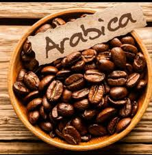
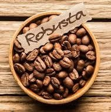
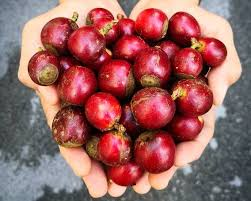
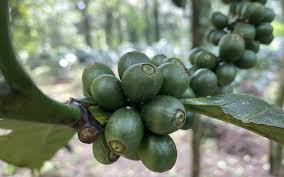
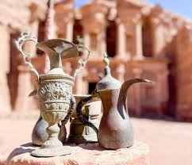
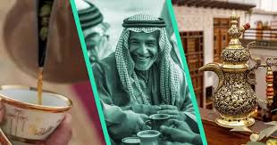

Origin:
Grown in South America, Ethiopia, and Kenya.
Represents approximately 60-70% of global coffee production.
Roasting Level:
Suitable for all roasting levels:
- Light: Highlights its acidity and fruity notes.
- Medium to Dark: Adds a richer, sweeter taste.
Acidity Level:
High, around 70%, adding a distinctive flavor and variety in taste.
Flavor Notes:
Fruity (such as berries and grapes) and floral notes.
Grind Size:
Versatile grind options:
- Fine: Perfect for espresso.
- Medium to Coarse: Suitable for black coffee or drip coffee.
Brewing Equipment:
Ideal for drip methods like V60 and Aeropress.
Also suitable for espresso preparation.

Origin:
Grown in Vietnam, Brazil, India, and Indonesia.
Represents approximately 30% of global coffee production.
Roasting Level:
Best roasted medium to dark, enhancing its chocolatey flavor and reducing bitterness.
Acidity Level:
Low, around 30%, making it less acidic than Arabica.
Flavor Notes:
Bitter and sharp, with hints of dark chocolate and earthy tones.
Grind Size:
Often ground fine for espresso.
Brewing Equipment:
Commonly used for espresso and instant coffee.

Origin:
Primarily grown in the Philippines and some African countries.
Accounts for a small portion of global production, around 2%.
Roasting Level:
Medium to dark roasts bring out its smoky flavor.
Acidity Level:
Moderate, about 50%.
Flavor Notes:
Smoky, with floral and tropical fruit hints.
Grind Size:
Typically medium to coarse for manual brewing.
Brewing Equipment:
Often used in drip coffee and traditional brewing methods.

Origin:
Cultivated in Southeast Asia, especially in Vietnam.
Represents about 7% of global coffee production.
Roasting Level:
Light to medium roast is preferred to maintain its unique flavor.
Acidity Level:
High, around 80%, giving it a tangy, fruit-juice-like character.
Flavor Notes:
Fruity with strong acidity similar to fruit juices.
Grind Size:
Medium to coarse for manual brewing.
Brewing Equipment:
Commonly used in blends to enhance flavor and in manual brewing methods.

Origin:
Traditional coffee in many Arab countries, especially in the Gulf region.
Roasting Level:
Lightly roasted to preserve natural flavors.
Acidity Level:
Low to moderate, providing a smooth taste.
Flavor Notes:
Nutty, earthy flavors with a hint of spice (often cardamom).
Grind Size:
Coarse grind, suitable for traditional brewing methods.
Brewing Equipment:
Commonly brewed in a dallah (traditional Arabic coffee pot) or using a cezve.
Serving:
Served without sugar or milk, often accompanied by dates.

Origin:
Less common than black coffee, enjoyed in some regions of the Arab world.
Roasting Level:
Lightly roasted, similar to black coffee, with a focus on bright flavors.
Acidity Level:
Moderate to high, giving it a refreshing character.
Flavor Notes:
Floral and citrus notes, with a light, smooth body.
Grind Size:
Coarse grind, similar to black Arabic coffee.
Brewing Equipment:
Brewed using similar methods to black Arabic coffee, such as in a dallah.
Serving:
Enjoyed without additives, allowing the unique flavors to be appreciated.